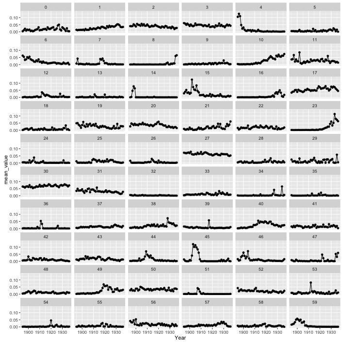
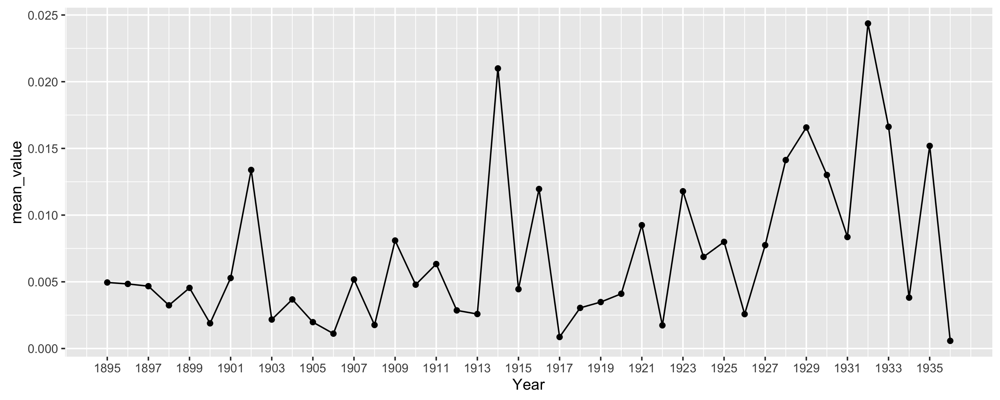
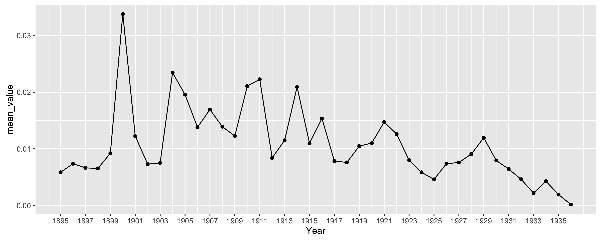
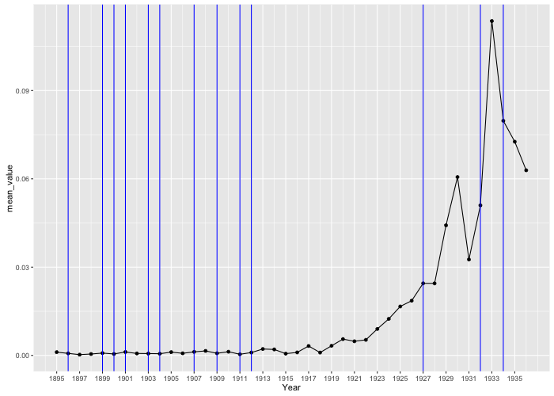

Mining Mind and Body
Approaches and Considerations for Using Data Mining to Identify Discourses in Digitized Publications
Amanda Regan
Ph.D. Candidate and Digital History Fellow
George Mason University
A "Topic" is simply a group of words that are likely to appear together in the same document.
heart, blood, pressure, rate, pulse, normal, cardiac, man, exertion, increase, exercise, vessels, flow, rest.

Average Topic Weight by Year
heart, blood, pressure, rate, pulse, normal, cardiac, man, exertion, increase, exercise, vessels, flow, rest.

Distribution of Topic 5 Over Time
Topic 42: gymnasium room rooms bath baths building space water end city
gymnasium room rooms bath baths building space water end city

Distribution of Topic 42 Over Time
physical training work education class schools time department director classes general school normal good members gymnasium.

Distribution of Topic 23 Over Time. Blue Lines Represent Editorial Shifts.
Mining Mind and Body
Approaches and Considerations for Using Data Mining to Identify Discourses in Digitized Publications
Amanda Regan
Ph.D. Candidate and Digital History Fellow
George Mason University